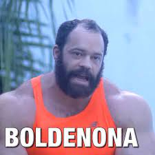

Para aqueles que não me conhecem, eu me chamo Gabriel,tenho 21 anos, e desde os 17 estou me aventurando no mundo da musculação. Resolvi criar esse blog com o intuito de reunir aqui todas as receitas que eu criei ou conheço.
E claro, não poderia faltar também a parte mais importante. Enantato de testosterona, acetato de tremb...
